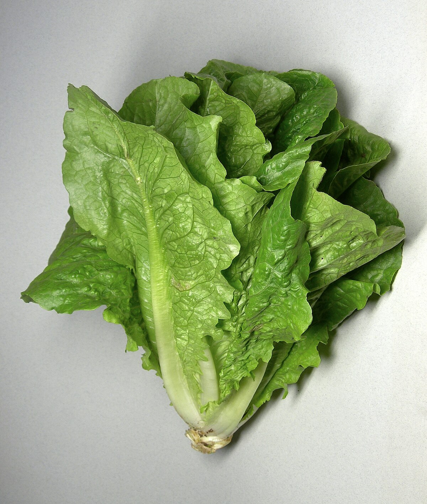
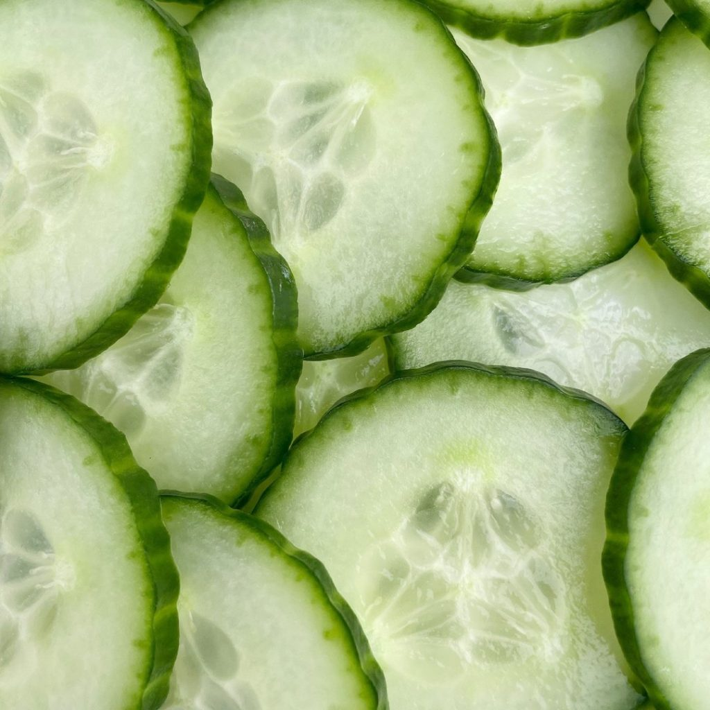

Recepta per fer una amanida
Ingredients
- Fulles d'enciam

- 1 tomàquet

- 1 cogombre

- Oli d'oliva
- Vinagre
- Sal i pebre
Passos:
- Renta bé les fulles d'enciam i talla-les en trossos mitjans.
- Talla el tomàquet en daus petits.
- Pela el cogombre i talla'l en rodanxes fines.
- Barreja tots els ingredients en un bol gran.
- Afegeix oli d'oliva i vinagre al gust.
- Salpebra al gust.
- Remena bé i serveix immediatament.